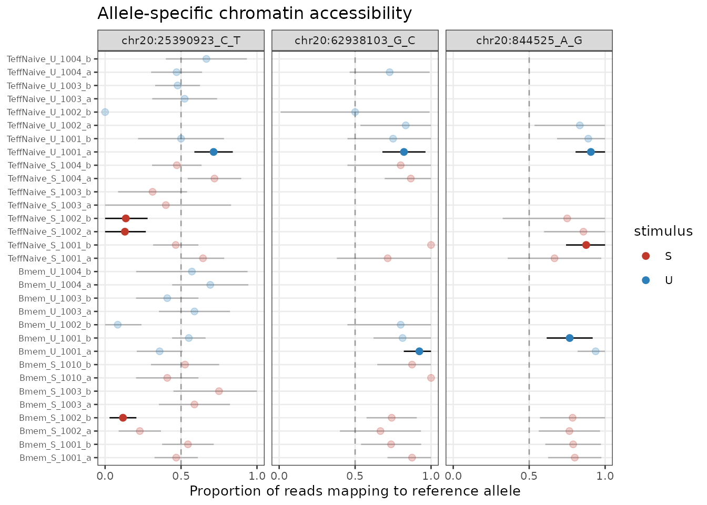
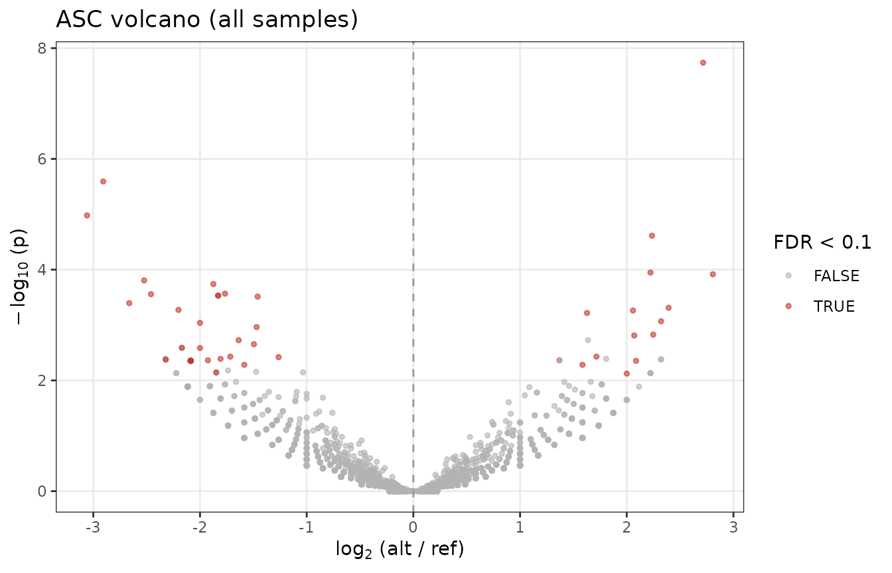
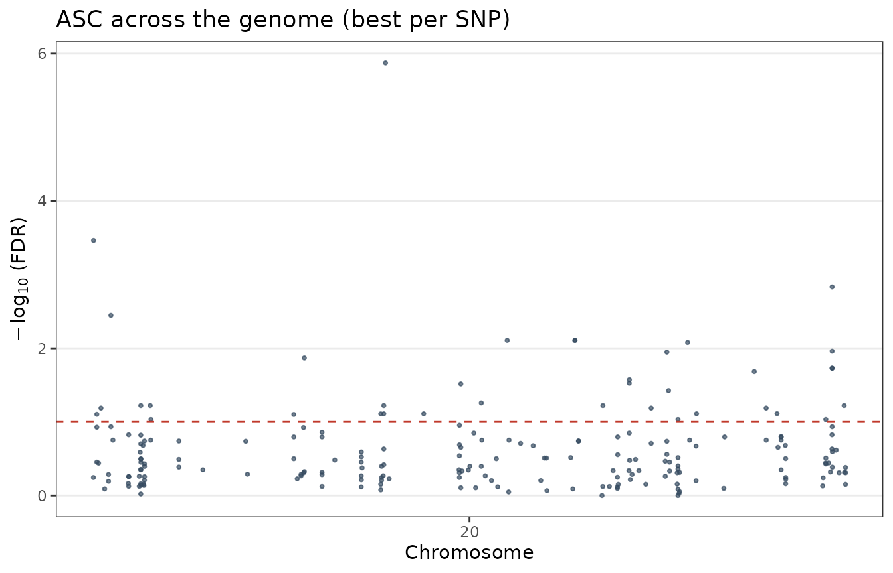
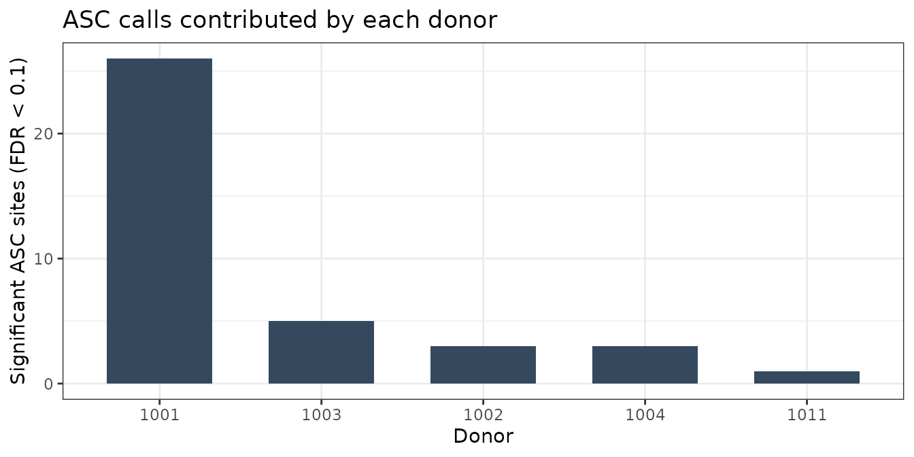
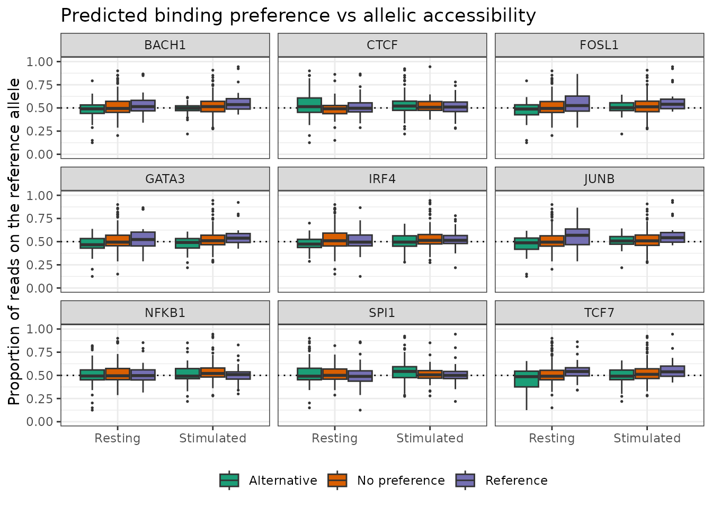

vignettes/allelespec.Rmd
allelespec.RmdBoth alleles of a heterozygous site sit in the same nucleus, see the same transcription factors and go through the same library preparation. Any difference in read counts between them comes from the sequence. That is what makes allele-specific chromatin accessibility (ASC) an internally controlled measurement: the second allele is the control.
AlleleSpeC is the ASC layer of ChrAccR. It
takes WASP-corrected BAM files and donor genotypes, counts reference and
alternative reads at heterozygous sites inside consensus peaks, tests
each site for imbalance, and checks whether the imbalance follows the
allele a transcription factor is predicted to bind. DsASC
holds the data. It is a DsAcc subclass with two aligned
count matrices (ref and alt, sites x samples)
and the allele-agnostic peak matrix in the same object.
This vignette covers the pipeline end to end. The stages that need a
cluster are shown but not run. Everything after counting runs on a small
example object in inst/extdata, built by
inst/scripts/make_vignette_data.R.
| Stage | Runs in | Entry point | Produces |
|---|---|---|---|
| Genotyping | shell (GATK) | 01_call_variants.sh |
{donor}_heterozygous.vcf.gz |
| Mapping-bias correction | shell (WASP) | 03_wasp.R |
{sample}_wasp.bam |
| Shared site list | R | buildMasterSNPs() |
master GRanges with donor membership |
| Allele counting | R | DsASC.gatk() |
one DsASC per cell type |
| Peak restriction | R |
annotateASCSites(), filterASCByPeaks(),
setAccessibility()
|
DsASC limited to open chromatin |
| Genotype and bias cleanup | R |
ascDropHomozygous(), ascFilterRegions(),
ascPoolReplicates()
|
cleaned count matrices |
| Imbalance testing | R |
calcASCStatistics(),
filterForRecurrence()
|
per site-sample statistics |
| Cross-cell-type sharing | R |
ascAggregate(), ascSharing(),
estimateSharedImbalance()
|
sharing estimates |
| Motif disruption | R |
motifmatchr scoring |
per-site PWM delta table |
| Binding preference | R | per-site PWM preference bins | reference fraction by predicted preference, per condition |
Genotyping and WASP are the slow steps, and they are also the ones that decide whether the results mean anything. The R functions below assume both were done properly.
The ASC layer needs a few packages beyond the standard
ChrAccR dependencies. VariantAnnotation and
Rsamtools for reading genotypes and running the pileup,
HDF5Array and DelayedArray for disk-backed
counting, ashr for the sharing estimate, and
JASPAR2020, TFBSTools,
motifmatchr plus a BSgenome package for the
motif step.
BiocManager::install(c("VariantAnnotation", "Rsamtools", "HDF5Array", "DelayedArray",
"JASPAR2020", "TFBSTools", "motifmatchr",
"BSgenome.Hsapiens.UCSC.hg38"))
install.packages("ashr")
library(ChrAccR)
library(GenomicRanges)
library(data.table)
library(ggplot2)
theme_set(theme_bw(base_size = 11))Two things have to be right before any allele is counted. Neither can be repaired downstream.
The heterozygous sites have to be really heterozygous. Genotypes are called per donor, jointly across all of that donor’s libraries, so a call rests on the donor’s full depth instead of one shallow sample. Only biallelic SNVs called heterozygous are kept, one file per donor.
And reads carrying the alternative allele have to survive alignment. A read that differs from the reference maps slightly worse than one that matches, which pushes every site toward the reference allele and manufactures ASC out of nothing. WASP re-maps each overlapping read with its alleles swapped and throws away any read that does not come back to the same position.
Neither step runs from ChrAccR. You need to run the genotyping and WASP scripts first. They live in the AlleleSpeC repository at https://github.com/EpigenomeInformatics/allele_spec, together with an audit script that checks whether the correction actually worked.
Run that audit even when WASP reports success. It measures the pooled reference fraction per sample at that donor’s heterozygous sites. A corrected library sits near 0.5; anything above roughly 0.55 is still biased and will contaminate everything downstream.
The sample annotation needs sampleId,
bamFilename and donor at minimum, plus
cellType and stimulus for grouping and
contrasts. Row names have to be the sample identifiers.
meta <- fread("tables/sampleAnnot_filtered.csv")
meta[, donor := as.character(donor)]
meta[, bamFilename := file.path(waspDir, paste0(sampleId, "_wasp.bam"))]
meta <- meta[file.exists(bamFilename)]Donors do not share heterozygous sites, so counting each cell type
against its own list gives objects whose rows do not line up.
buildMasterSNPs() reads every donor VCF once and returns
the sorted union of biallelic heterozygous SNPs, with a
donorMembership column recording which donors are
heterozygous at each site.
masterGr <- buildMasterSNPs(donors = unique(meta$donor), vcfDir = vcfDir, genome = "hg38")
saveRDS(masterGr, file.path(ascDir, "masterSNPs.rds"))Build it once and reuse it. Row alignment is what makes it possible to ask later whether a site imbalanced in T cells is also imbalanced in B cells. The membership column lets each sample be counted only where its own donor is heterozygous and marked missing everywhere else.
DsASC.gatk() runs the pileup. Sites outside a sample’s
donor het set get NA instead of zero. A zero there would
look like a covered site with no imbalance, and every homozygous
genotype would turn into a balanced call. Genuine zeros inside the het
set stay zero. Pileup stringency comes from the package
configuration.
setConfigElement("minMapq", 20L)
setConfigElement("minBaseq", 20L)
setConfigElement("maxDepth", 5000L)
dsAsc <- DsASC.gatk(
sampleAnnot = as.data.frame(meta[cellType == "Tcell",
.(sampleId, bamFilename, donor, cellType, stimulus)]),
vcfDir = vcfDir,
genome = "hg38",
diskDump = TRUE,
masterGr = masterGr
)diskDump = TRUE writes the two matrices into HDF5 sinks
one sample column at a time, so memory stays flat however many million
sites the master list holds. Realize them back into memory before saving
the object, or the .rds ends up pointing at an HDF5 file
that will not travel with it.
Cell types are independent once the master list exists, so counting
runs as a job array: one serial R process per cell type, all writing to
the same directory. src/01_asc_counting_ChrAccR.R takes
either build_master or a cell type name as its
argument.
A heterozygous site is only informative where there is chromatin
signal. The peaks come from the ordinary ChrAccR ATAC
workflow, and the same object supplies the allele-agnostic accessibility
matrix.
dsAtac <- loadDsAcc(atacDir)
peakGr <- getCoord(dsAtac, "cons_peaks")
peakMat <- getCounts(dsAtac, "cons_peaks")
names(peakGr) <- paste0("peak_", seq_along(peakGr))
rownames(peakMat) <- names(peakGr)
dsAsc <- filterChroms(dsAsc, remove = c("chrX", "chrY", "chrM"))
dsAsc <- filterLowCovg(dsAsc, thresh = 5, reqSamples = 1)
dsAsc <- annotateASCSites(dsAsc, peakGr)
dsAsc <- filterASCByPeaks(dsAsc)
dsAsc <- setAccessibility(dsAsc, peakMat[, getSamples(dsAsc)], peakGr)Sex chromosomes go first, since allelic balance is not defined there. The coverage filter runs before peak annotation because it is cheaper and removes most of the rows.
Everything below needs four objects: a DsASC, the peaks
and accessibility matrix that go with it, and a table of per-site motif
deltas. The packaged example has all four, cut from a full run down to a
few cell types from different lineages, resting and stimulated samples,
one chromosome and a few thousand covered sites. Thymic populations are
left out. They are the shallowest libraries in the dataset and mostly do
not survive coverage filtering.
inst/scripts/make_vignette_data.R builds that file and
prints its size, so the example cannot grow unnoticed. Point it at your
own asc_counts directory to regenerate it, adjusting the
cell types, chromosome and site count at the top of the script.
example <- readRDS(examplePath)
dsDemo <- example$ds
peakGr <- example$peakGr
peakMat <- example$peakMat
deltaDemo <- example$delta
dsDemo> DsASC allele-specific chromatin accessibility dataset
> contains:
> * 34 samples
> * 211 heterozygous SNP sites
> * accessibility: not loaded
> * allele assays: ref, altThe filtering chain runs next. On the packaged example the peak restriction barely removes anything, since the counting step already applied it.
dsDemo <- filterChroms(dsDemo, remove = c("chrX", "chrY", "chrM"))> 2026-09-03 19:39:27 5.2 INFO Kept 1 chromosomes. Removed 0 sites (0%)
dsDemo <- filterLowCovg(dsDemo, thresh = 5, reqSamples = 1)> 2026-09-03 19:39:27 5.2 STATUS Removing sites with total coverage < 5 in > 33 samples
> 2026-09-03 19:39:27 5.2 INFO Removed 0 sites (0%)
if (!is.null(peakGr)) {
dsDemo <- annotateASCSites(dsDemo, peakGr)
dsDemo <- filterASCByPeaks(dsDemo)
}> 2026-09-03 19:39:27 5.2 STATUS STARTED Annotating SNPs with Consensus Peaks
> 2026-09-03 19:39:27 5.2 INFO 211 SNPs (100%) overlap with consensus peaks.
> 2026-09-03 19:39:27 5.2 STATUS COMPLETED Annotating SNPs with Consensus Peaks
>
> 2026-09-03 19:39:27 5.2 STATUS STARTED Filtering SNPs outside peaks
> 2026-09-03 19:39:27 5.2 INFO Retained 211 SNPs inside peaks.
> 2026-09-03 19:39:27 5.2 STATUS COMPLETED Filtering SNPs outside peaks
if (!is.null(peakMat) && all(getSamples(dsDemo) %in% colnames(peakMat))) {
dsDemo <- setAccessibility(dsDemo, peakMat, peakGr)
}> 2026-09-03 19:39:27 5.2 STATUS STARTED Attaching accessibility matrix to DsASC
> 2026-09-03 19:39:27 5.2 INFO Stored 144 peaks x 34 samples.
> 2026-09-03 19:39:27 5.2 STATUS COMPLETED Attaching accessibility matrix to DsASC
dsDemo> DsASC allele-specific chromatin accessibility dataset
> contains:
> * 34 samples
> * 211 heterozygous SNP sites
> * 144 consensus peaks
> * accessibility matrix: 144 peaks x 34 samples
> * allele assays: ref, altThe accessors return plain matrices. getAllelicBalance()
gives the alternative-allele fraction with a coverage floor applied, and
every plot below comes back to it.
dim(getRefCounts(dsDemo))> [1] 211 34> Min. 1st Qu. Median Mean 3rd Qu. Max. NA's
> 0.000 0.375 0.488 0.482 0.588 1.000 5384Three corrections belong between counting and testing. All three work on the count matrices rather than on the object, since they change what a column means.
Mis-genotyped sites first. A site called heterozygous but actually
homozygous gives a clean, highly significant imbalance, and there will
be plenty of them. ascDropHomozygous() pools each donor’s
samples and zeroes the sites where the pooled minor allele is absent or
sits at an error-level fraction. They then drop out at the coverage
filter instead of topping the results table.
annotDemo <- getSampleAnnot(dsDemo)
cleaned <- ascDropHomozygous(getRefCounts(dsDemo), getAltCounts(dsDemo), annotDemo,
minMinor = 2L, minMinorFrac = 0.05, minTotal = 10L)> 2026-09-03 19:39:27 5.2 INFO ascDropHomozygous: masked 4 donor x site loci (20 cells) as homozygous/mis-genotyped.Then region masking. Repetitive and low-mappability regions are where
WASP fails and where false heterozygous calls collect, and both push the
result toward the reference allele. ascFilterRegions()
takes the site identifiers and an ENCODE blacklist and returns the ones
to keep.
keepIds <- ascFilterRegions(rownames(cleaned$ref), blacklistGr)
cleaned$ref <- cleaned$ref[keepIds, ]
cleaned$alt <- cleaned$alt[keepIds, ]Then the unit of analysis. Testing a technical replicate throws away
half the reads and most of the power that comes with them.
ascPoolReplicates() sums libraries that share a donor, cell
type and condition, and returns a matching annotation.
pooled <- ascPoolReplicates(cleaned$ref, cleaned$alt, annotDemo,
groupCols = c("cellType", "stimulus", "donor"))> 2026-09-03 19:39:28 5.2 INFO ascPoolReplicates: pooled 34 libraries into 17 biological samples (cellType x stimulus x donor).
dim(pooled$ref)> [1] 211 17
head(pooled$annot, 3)> sampleId cellType stimulus donor
> <char> <char> <char> <char>
> 1: Bmem_S_1001 Bmem S 1001
> 2: Bmem_S_1002 Bmem S 1002
> 3: Bmem_S_1003 Bmem S 1003Every site-sample pair with enough coverage gets a two-sided binomial
test against 0.5, with p-values corrected within each sample. The null
stays at 0.5. WASP handles mapping bias, and re-centring the null on the
observed allele fraction would calibrate it against the signal being
tested. minAllele requires reads on both alleles, which
drops the low-coverage calls that only reach significance with a minor
allele of exactly zero.
ascStats <- calcASCStatistics(dsDemo, minCoverage = 10, minAllele = 2)> 2026-09-03 19:39:28 5.2 STATUS STARTED Calculating ASC Statistics (binomial test vs p = 0.5)
> 2026-09-03 19:39:28 5.2 INFO Running two-sided binomial test against p = 0.5
> 2026-09-03 19:39:28 5.2 INFO Tested 1747 site-sample observations; 47 significant at FDR < 0.1.
> 2026-09-03 19:39:28 5.2 STATUS COMPLETED Calculating ASC Statistics (binomial test vs p = 0.5)
ascStats[, donor := annotDemo$donor[match(sampleId, annotDemo$sampleId)]]
ascStats[order(fdr)][1:5, .(snpId, sampleId, donor, ref, alt, total, log2FC, fdr)]> snpId sampleId donor ref alt total log2FC
> <char> <char> <char> <num> <num> <num> <num>
> 1: chr20:25390923_C_T Bmem_S_1002_b 1002 6 45 51 2.716207
> 2: chr20:844525_A_G TeffNaive_U_1001_a 1001 29 3 32 -2.906891
> 3: chr20:62938103_G_C Bmem_U_1001_a 1001 24 2 26 -3.058894
> 4: chr20:2301403_A_C Bmem_U_1001_b 1001 6 32 38 2.237039
> 5: chr20:844525_A_G TeffNaive_S_1001_b 1001 21 3 24 -2.459432
> fdr
> <num>
> 1: 1.337625e-06
> 2: 3.450620e-04
> 3: 1.468658e-03
> 4: 3.578356e-03
> 5: 7.793037e-03Three standard views of that table: a per-site forest plot, a volcano, and a genome-position plot. In the forest plot each point is one sample at one site, the bars are binomial confidence intervals, and faded points did not reach the FDR cutoff.
topSites <- as.character(ascStats[order(fdr), unique(snpId)])[1:3]
plotASCBalance(dsDemo, topSites, colorBy = "stimulus", orderBy = "cellType",
sigStats = ascStats, sigCut = 0.1) +
scale_colour_manual(values = c(S = "#C0392B", U = "#2C7FB8"), name = "stimulus")> Warning:
[1m
[22m`aes_string()` was deprecated in ggplot2 3.0.0.
>
[36mℹ
[39m Please use tidy evaluation idioms with `aes()`.
>
[36mℹ
[39m See also `vignette("ggplot2-in-packages")` for more information.
>
[36mℹ
[39m The deprecated feature was likely used in the
[34mChrAccR
[39m package.
> Please report the issue at
>
[3m
[34m<https://github.com/EpigenomeInformatics/ChrAccR/issues>
[39m
[23m.
>
[90mThis warning is displayed once every 8 hours.
[39m
>
[90mCall `lifecycle::last_lifecycle_warnings()` to see where this warning was
[39m
>
[90mgenerated.
[39m
plotASCVolcano(dsDemo, stats = ascStats, sigCut = 0.1)
plotASCManhattan(dsDemo, stats = ascStats, sigCut = 0.1)
Check where the calls came from before reading anything into them. A donor with deeper libraries contributes more significant sites through power alone, and a donor with a bad genotype batch contributes more because its false heterozygotes all look perfectly imbalanced. Counting the calls per donor shows both.
sigPerDonor <- ascStats[fdr < 0.1, .(nSites = uniqueN(snpId)), by = donor]
ggplot(sigPerDonor, aes(x = reorder(donor, -nSites), y = nSites)) +
geom_col(fill = "#34495E", width = 0.65) +
labs(x = "Donor", y = "Significant ASC sites (FDR < 0.1)",
title = "ASC calls contributed by each donor")
Bars of roughly equal height are fine. One bar several times the rest means going back to that donor’s coverage and genotype QC before trusting sites only it supports.
One significant call in one donor is weak evidence for the same
reason. filterForRecurrence() counts how many donors
independently support each site.
recurrent <- filterForRecurrence(ascStats, minDonors = 2, fdrCutoff = 0.1)> 2026-09-03 19:39:31 5.5 STATUS STARTED Identifying Recurrent ASC Sites
> 2026-09-03 19:39:31 5.5 INFO Initial significant events: 47
> 2026-09-03 19:39:31 5.5 INFO Recurrent events (N>= 2 donors): 1
> 2026-09-03 19:39:31 5.5 STATUS COMPLETED Identifying Recurrent ASC Sites
head(recurrent, 5)> snpId n_donors_sig mean_LFC
> <char> <int> <num>
> 1: chr20:25390923_C_T 2 1.541855Every cell type was counted against the same master list, so the per-cell-type objects stack into one aligned pair of matrices.
merged <- mergeDsASCArray(ascDir)The sharing question is asymmetric. Take the sites significant in
cell type A and ask what they do in B: imbalanced in the same direction,
balanced, or too shallow to say. ascSharing() separates
those three and uses ashr to estimate the proportion with a
non-zero effect in B, which is more informative than counting
significance calls twice.
cellsPresent <- unique(pooled$annot$cellType)
samplesA <- pooled$annot[cellType == cellsPresent[1], sampleId]
samplesB <- pooled$annot[cellType == cellsPresent[2], sampleId]
aggA <- ascAggregate(pooled$ref, pooled$alt, samplesA)
aggB <- ascAggregate(pooled$ref, pooled$alt, samplesB)
sharing <- ascSharing(aggA$ref, aggA$alt, aggB$ref, aggB$alt,
fdrA = 0.01, minReadsB = 4)
sharingascSitePosterior() gives the per-site posterior and FDR
behind that estimate. ascStratum() labels a pair of groups
by whether they share lineage, condition, both or neither.
estimateSharedImbalance() runs the same logic directly on
two DsASC objects when the matrices have not been merged by
hand.
shared <- estimateSharedImbalance(dsTcell, dsBcell, fdrCutoff = 0.01)
shared$sharing_estimateA variant links to a transcription factor through the change in
predicted binding. For each site, take a window as wide as the widest
motif, substitute the centre base to get the reference and the
alternative version, score both with every PWM, and record
delta = score(ALT) - score(REF). A positive delta means the
alternative allele is the predicted stronger binder.
library(JASPAR2020); library(TFBSTools); library(motifmatchr)
library(BSgenome.Hsapiens.UCSC.hg38)
pfms <- getMatrixSet(JASPAR2020, list(species = 9606, collection = "CORE"))
flank <- max(vapply(pfms, function(p) ncol(as.matrix(p)), 1L))
sites <- coordDt[snpId %in% sigSnps]
gr <- GRanges(sites$chrom, IRanges(sites$pos - flank, sites$pos + flank))
seqRef <- getSeq(BSgenome.Hsapiens.UCSC.hg38, gr)
seqAlt <- replaceLetterAt(
seqRef,
at = matrix(seq_len(width(seqRef)[1]) == (flank + 1L),
nrow = length(seqRef), ncol = width(seqRef)[1], byrow = TRUE),
letter = sites$ALT)
scoreSet <- function(s) as.matrix(motifScores(
matchMotifs(pfms, s, out = "scores", bg = "even", p.cutoff = 1)))
delta <- scoreSet(seqAlt) - scoreSet(seqRef)
colnames(delta) <- vapply(pfms, name, "")
deltaDt <- rbindlist(lapply(colnames(delta), function(tfName)
data.table(snpId = sites$snpId, tf = tfName, delta = delta[, tfName])))Only the ASC-significant sites are scored. That is what keeps a genome-wide motif set affordable, and sites with no imbalance carry no allelic information anyway.
deltaDemo already holds a table of this shape. In the
packaged example it is the real output of the code above, computed once
over the example sites by the data script. In the simulated fallback it
is three profiles: one aligned with the injected imbalance, one partly
aligned, one shuffled.
> tf nSites meanAbsDelta
> <char> <int> <num>
> 1: CTCF 211 2.27
> 2: NFKB1 211 2.40
> 3: GATA3 211 0.85
> 4: IRF4 211 2.53
> 5: BACH1 211 1.45
> 6: FOSL1 211 1.31
> 7: JUNB 211 1.27
> 8: SPI1 211 1.61
> 9: TCF7 211 0.83Each site is then labelled by the allele its motif prefers. Sites past the threshold in either direction are called for that allele, and everything in between is the internal control. The driver script uses 1.0 on the PWM score; it is lower here because the example carries a few thousand sites rather than a genome’s worth.
prefDelta <- 0.5
prefDt <- data.table::copy(deltaDemo)
prefDt[, preference := fifelse(delta > prefDelta, "Alternative",
fifelse(delta < -prefDelta, "Reference", "No preference"))]
prefDt[, .N, by = .(tf, preference)][order(tf, preference)][1:6]> tf preference N
> <char> <char> <int>
> 1: BACH1 Alternative 50
> 2: BACH1 No preference 122
> 3: BACH1 Reference 39
> 4: CTCF Alternative 80
> 5: CTCF No preference 56
> 6: CTCF Reference 75This is where the two halves meet. If a variant really disrupts a binding site, the allele the motif prefers should be the more accessible one, and the effect should be stronger when the factor is active. Pooling reads by condition and plotting the reference-allele fraction against the predicted preference tests that directly, with the no-preference sites at 0.5 as a check that the axis is not simply skewed.
condFrac <- function(cond, label) {
sids <- intersect(pooled$annot[stimulus == cond, sampleId], colnames(pooled$ref))
r <- rowSums(pooled$ref[, sids, drop = FALSE])
a <- rowSums(pooled$alt[, sids, drop = FALSE])
data.table(snpId = rownames(pooled$ref), refFrac = r / (r + a),
total = r + a, condition = label)
}
fracDt <- rbindlist(list(condFrac("U", "Resting"), condFrac("S", "Stimulated")))
fracDt <- fracDt[total >= 4]
plotDt <- merge(fracDt, prefDt, by = "snpId", allow.cartesian = TRUE)
plotDt[, preference := factor(preference,
levels = c("Alternative", "No preference", "Reference"))]
plotDt[, condition := factor(condition, levels = c("Resting", "Stimulated"))]
ggplot(plotDt, aes(x = condition, y = refFrac, fill = preference)) +
geom_hline(yintercept = 0.5, linetype = "dotted") +
geom_boxplot(outlier.size = 0.3, position = position_dodge(width = 0.8)) +
facet_wrap(~ tf) +
scale_fill_manual(values = c("Alternative" = "#1B9E77",
"No preference" = "#D95F02",
"Reference" = "#7570B3"), name = NULL) +
scale_y_continuous(limits = c(0, 1)) +
labs(x = NULL, y = "Proportion of reads on the reference allele",
title = "Predicted binding preference vs allelic accessibility") +
theme(legend.position = "bottom")
What to look for is separation between the two coloured boxes. Sites where the motif prefers the reference allele should sit above 0.5, sites where it prefers the alternative below it. A Mann-Whitney test per factor and condition puts a number on the gap.
plotDt[preference %in% c("Reference", "Alternative"),
.(p = tryCatch(wilcox.test(refFrac ~ droplevels(preference))$p.value,
error = function(e) NA_real_)),
by = .(tf, condition)][order(p)]> tf condition p
> <char> <fctr> <num>
> 1: BACH1 Stimulated 0.003755054
> 2: TCF7 Resting 0.009438362
> 3: TCF7 Stimulated 0.009719738
> 4: JUNB Resting 0.011189696
> 5: GATA3 Stimulated 0.012781993
> 6: JUNB Stimulated 0.022853598
> 7: FOSL1 Stimulated 0.025915865
> 8: BACH1 Resting 0.040652960
> 9: IRF4 Resting 0.040864317
> 10: FOSL1 Resting 0.040904532
> 11: SPI1 Stimulated 0.049796877
> 12: GATA3 Resting 0.053568619
> 13: IRF4 Stimulated 0.097353430
> 14: SPI1 Resting 0.314953736
> 15: CTCF Stimulated 0.432949012
> 16: CTCF Resting 0.498575427
> 17: NFKB1 Stimulated 0.651486373
> 18: NFKB1 Resting 0.752118400droplevels() matters here. preference has
three levels, and the formula interface of wilcox.test
rejects a grouping factor that still carries an unused level, so without
it every p-value comes back as NA through the
tryCatch.
The calls can be checked against the allele-specific variants in Calderon et al., Nature Genetics 2019 (doi:10.1038/s41588-019-0505-9). Their supplementary table lists genotypes, WASP-corrected counts and allele fractions for the GWAS-overlapping ASC sites. Lifting those coordinates to the working assembly and matching per donor and site answers three questions: whether the direction of imbalance is reproduced, whether the reference fraction at matched sites is skewed relative to theirs, and whether the significant set sits at a comparable allele fraction overall.
> Warning in system("timedatectl", intern = TRUE): running command 'timedatectl'
> had status 1> R version 4.4.1 (2024-06-14)
> Platform: x86_64-conda-linux-gnu
> Running under: Debian GNU/Linux 11 (bullseye)
>
> Matrix products: default
> BLAS/LAPACK: /icbb/projects/share/software/packages/miniconda3/envs/alleleSpec/lib/libopenblasp-r0.3.30.so; LAPACK version 3.12.0
>
> locale:
> [1] LC_CTYPE=en_US.UTF-8 LC_NUMERIC=C
> [3] LC_TIME=en_US.UTF-8 LC_COLLATE=en_US.UTF-8
> [5] LC_MONETARY=en_US.UTF-8 LC_MESSAGES=en_US.UTF-8
> [7] LC_PAPER=en_US.UTF-8 LC_NAME=C
> [9] LC_ADDRESS=C LC_TELEPHONE=C
> [11] LC_MEASUREMENT=en_US.UTF-8 LC_IDENTIFICATION=C
>
> time zone: Europe/Berlin
> tzcode source: system (glibc)
>
> attached base packages:
> [1] stats4 stats graphics grDevices utils datasets methods
> [8] base
>
> other attached packages:
> [1] ggplot2_4.0.1 data.table_1.17.8 GenomicRanges_1.58.0
> [4] GenomeInfoDb_1.42.0 IRanges_2.40.0 S4Vectors_0.44.0
> [7] BiocGenerics_0.52.0 ChrAccR_0.9.26
>
> loaded via a namespace (and not attached):
> [1] SummarizedExperiment_1.36.0 gtable_0.3.6
> [3] xfun_0.54 bslib_0.9.0
> [5] htmlwidgets_1.6.4 rhdf5_2.50.0
> [7] Biobase_2.66.0 lattice_0.22-7
> [9] generics_0.1.4 rhdf5filters_1.18.0
> [11] vctrs_0.6.5 tools_4.4.1
> [13] bitops_1.0-9 parallel_4.4.1
> [15] tibble_3.3.0 pkgconfig_2.0.3
> [17] Matrix_1.7-4 RColorBrewer_1.1-3
> [19] S7_0.2.1 desc_1.4.3
> [21] lifecycle_1.0.4 GenomeInfoDbData_1.2.13
> [23] compiler_4.4.1 farver_2.1.2
> [25] Rsamtools_2.22.0 textshaping_1.0.1
> [27] Biostrings_2.74.0 codetools_0.2-20
> [29] muLogR_0.2 muRtools_0.9.6
> [31] htmltools_0.5.8.1 sass_0.4.10
> [33] yaml_2.3.11 pillar_1.11.1
> [35] pkgdown_2.2.0 crayon_1.5.3
> [37] jquerylib_0.1.4 BiocParallel_1.40.0
> [39] DelayedArray_0.32.0 cachem_1.1.0
> [41] abind_1.4-8 tidyselect_1.2.1
> [43] digest_0.6.39 dplyr_1.1.4
> [45] labeling_0.4.3 fastmap_1.2.0
> [47] grid_4.4.1 cli_3.6.5
> [49] SparseArray_1.6.0 magrittr_2.0.4
> [51] S4Arrays_1.6.0 dichromat_2.0-0.1
> [53] withr_3.0.2 UCSC.utils_1.2.0
> [55] scales_1.4.0 rmarkdown_2.30
> [57] XVector_0.46.0 httr_1.4.7
> [59] matrixStats_1.5.0 ragg_1.5.0
> [61] HDF5Array_1.34.0 evaluate_1.0.5
> [63] knitr_1.50 rlang_1.1.6
> [65] glue_1.8.0 jsonlite_2.0.0
> [67] R6_2.6.1 Rhdf5lib_1.28.0
> [69] MatrixGenerics_1.18.0 GenomicAlignments_1.42.0
> [71] systemfonts_1.3.1 fs_1.6.6
> [73] zlibbioc_1.52.0